Git 介绍
- Git 是一个开源的分布式版本控制系统，用于敏捷高效地处理任何或小或大的项目。
- Git 是 Linus Torvalds 为了帮助管理 Linux 内核开发而开发的一个开放源码的版本控制软件。
- Git 与常用的版本控制工具 CVS, Subversion 等不同，它采用了分布式版本库的方式，不必服务器端软件支持。
Git 与 SVN 区别
Git 不仅仅是个版本控制系统，它也是个内容管理系统（CMS）,工作管理系统等。
如果你是一个具有使用SVN背景的人，你需要做一定的思想转换，来适应 Git 提供的一些概念和特征。
Git 与 SVN 区别点：
- Git 是分布式的，SVN 不是：这是 Git 和其它非分布式的版本控制系统，例如 SVN，CVS 等，最核心的区别。
- Git 把内容按元数据方式存储，而 SVN 是按文件：所有的资源控制系统都是把文件的元信息隐藏在一个类似 .svn，.cvs 等的文件夹里。
- Git 分支和 SVN 的分支不同：分支在 SVN 中一点不特别，就是版本库中的另外的一个目录。
- Git 没有一个全局的版本号，而 SVN 有：目前为止这是跟SVN相比 Git 缺少的最大的一个特征。
- Git 的内容完整性要优于 SVN：Git 的内容存储使用的是SHA-1哈希算法。这能确保代码内容的完整性，确保在遇到磁盘故障和网络问题时降低对版本库的破坏。
Git 安装配置
在使用 Git 前我们需要先安装 Git。Git 目前支持 Linux/Unix、Solaris、Mac 和 Windows 平台上运行。Git 各平台安装包下载地址为：http://git-scm.com/downloads
Windows 平台上安装（不再赘述）：https://wvincen.gitee.io/2019/08/22/Git-1-Git-%E7%AE%80%E4%BB%8B%E5%92%8C%E5%AE%89%E8%A3%85/
Mac 上安装 Git
通过 Homebrew 安装 Git：brew install git
用户信息
配置个人的用户名称和电子邮件地址：1
2git config --global user.name "用户名"
git config --global user.email "邮箱地址"
如果用了 --global 选项，那么更改的配置文件就是位于你用户主目录下的那个，以后你所有的项目都会默认使用这里配置的用户信息。
如果要在某个特定的项目中使用其他名字或者电邮，只要去掉 --global 选项重新配置即可，新的设定保存在当前项目的 .git/config 文件里。
Git 基本原理
Git 有以下工作区：
- 工作区：就是你在电脑里能看到的目录。
- 暂存区：英文叫
stage, 或index。一般存放在.git目录下的index文件（.git/index）中，所以我们把暂存区有时也叫作索引（index）。 - 版本库：工作区有一个隐藏目录
.git，这个不算工作区，而是 Git 的版本库。
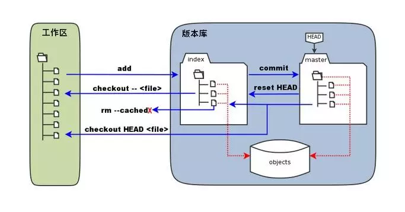
图中左侧为工作区，右侧为版本库。在版本库中标记为 index 的区域是暂存区（stage, index），标记为 master 的是 master 分支所代表的目录树。
图中我们可以看出此时 HEAD 实际是指向 master 分支的一个 游标。所以图示的命令中出现 HEAD 的地方可以用 master 来替换。
图中的 objects 标识的区域为 Git 的对象库，实际位于 .git/objects 目录下，里面包含了创建的各种对象及内容。
当对工作区修改（或新增）的文件执行 git add 命令时，暂存区的目录树被更新，同时工作区修改（或新增）的文件内容被写入到对象库中的一个新的对象中，而该对象的 ID 被记录在暂存区的文件索引中。
当执行提交操作（git commit）时，暂存区的目录树写到版本库（对象库）中，master 分支会做相应的更新。即 master 指向的目录树就是提交时暂存区的目录树。
当执行 git reset HEAD 命令时，暂存区的目录树会被重写，被 master 分支指向的目录树所替换，但是工作区不受影响。
当执行 git rm --cached <file> 命令时，会直接从暂存区删除文件，工作区则不做出改变。
当执行 git checkout . 或者 git checkout -- <file> 命令时，会用暂存区全部或指定的文件替换工作区的文件。这个操作很危险，会清除工作区中未添加到暂存区的改动。
当执行 git checkout HEAD . 或者 git checkout HEAD <file> 命令时，会用 HEAD 指向的 master 分支中的全部或者部分文件替换暂存区和以及工作区中的文件。这个命令也是极具危险性的，因为不但会清除工作区中未提交的改动，也会清除暂存区中未提交的改动。
Git 基本操作
创建新仓库
创建新文件夹，打开，然后执行1
git init
以创建新的 git 仓库。
检出仓库
执行如下命令以创建一个本地仓库的克隆版本：1
git clone /path/to/repository
如果是远端服务器上的仓库，你的命令会是这个样子：1
git clone username@host:/path/to/repository
添加和提交
你可以提出更改（把它们添加到暂存区），使用如下命令：1
2git add <filename>
git add *
这是 git 基本工作流程的第一步；
使用如下命令以实际提交改动：1
git commit -m "代码提交信息"
现在，你的改动已经提交到了 HEAD，但是还没到你的远端仓库。
推送改动
你的改动现在已经在本地仓库的 HEAD 中了。执行如下命令以将这些改动提交到远端仓库：1
git push origin master
可以把 master 换成你想要推送的任何分支。
如果你还没有克隆现有仓库，并欲将你的仓库连接到某个远程服务器，你可以使用如下命令添加：1
git remote add origin <server>
如此你就能够将你的改动推送到所添加的服务器上去了。
分支
分支是用来将特性开发绝缘开来的。在你创建仓库的时候，master 是“默认的”分支。在其他分支上进行开发，完成后再将它们合并到主分支上。
创建一个叫做“feature_x”的分支，并切换过去：1
git checkout -b feature_x
切换回主分支：1
git checkout master
再把新建的分支删掉：1
git branch -d feature_x
除非你将分支推送到远端仓库，不然该分支就是不为他人所见的：1
git push origin <branch>
分支更新与合并
要更新你的本地仓库至最新改动，执行：1
git pull
以在你的工作目录中获取（fetch）并合并（merge）远端的改动。
要合并其他分支到你的当前分支（例如 master），执行：1
git merge <branch>
在这两种情况下，git 都会尝试去自动合并改动。遗憾的是，这可能并非每次都成功，并可能出现冲突（conflicts）。 这时候就需要你修改这些文件来手动合并这些冲突（conflicts）。改完之后，你需要执行如下命令以将它们标记为合并成功：1
git add <filename>
在合并改动之前，你可以使用如下命令预览差异：1
git diff <source_branch> <target_branch>
标签
通常我们在发布版本的时候会打上标签。这个概念早已存在，在 SVN 中也有。你可以执行如下命令创建一个叫做 1.0.0 的标签：1
git tag 1.0.0 1b2e1d63ff
1b2e1d63ff 是你想要标记的提交 ID 的前 10 位字符。可以使用下列命令获取提交 ID：1
git log
你也可以使用少一点的提交 ID 前几位，只要它的指向具有唯一性。
替换本地改动
假如你操作失误（当然，这最好永远不要发生），你可以使用如下命令替换掉本地改动：1
git checkout -- <filename>
此命令会使用 HEAD 中的最新内容替换掉你的工作目录中的文件。已添加到暂存区的改动以及新文件都不会受到影响。
假如你想丢弃你在本地的所有改动与提交，可以到服务器上获取最新的版本历史，并将你本地主分支指向它：1
2git fetch origin
git reset --hard origin/master
Git 权限控制介绍
Git角色介绍
首先来了解下，Git 中的五种角色：
| 角色 | 解释 |
|---|---|
| Owner | Git 系统管理员 |
| Master | Git 项目管理员 |
| Developer | Git 项目开发人员 |
| Reporter | Git 项目测试人员 |
| Guest | 访客 |
相关权限如下：
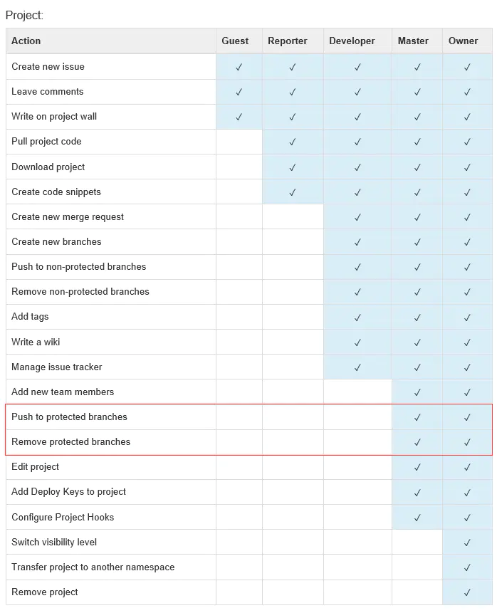
可以将特定 branch，例如 master、develop 等设为保护分支，由代码管理员进行维护，合并开发人员提交的代码。
Git 版本管理
建立项目
Git 对于权限控制分为三种级别：私有、内部、公开。
- 私有：项目访问权限必须明确授权给每个用户，未授权的用户无法访问。
- 内部：该项目允许已登录的用户访问。
- 公开：该项目允许任何人访问。
为了保证代码的安全性，所有项目的建立均为私有，同时在管理员面板中关闭内部和公开项目的建立（Restricted visibility levels）。
Git 中支持将项目按照 group 进行划分，例如我们可以建立如下 group：车联网(一级 group)\项目A（二级 group）
从而将不同的人员分配到不同的 group 级别，实现不同级别的权限配置。
分支管理
Git 在技术层面上是一个无中心的分布式版本控制系统，但在管理层面上，保持一个中心版本库（Gitlab）。
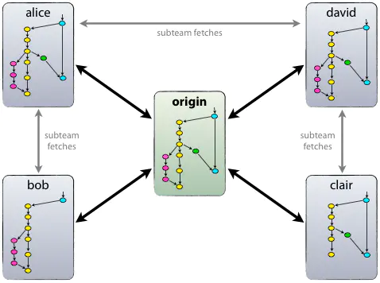
一个中心版本库（我们叫它 origin ）至少包括两个分支，即 主分支（master）和 开发分支（develop）
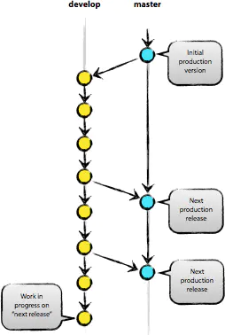
团队成员从主分支（master）获得的都是处于可发布状态的代码，而从开发分支（develop）应该总能够获得最新开发进展的代码。
在一个团队开发协作中有 辅助分支 的概念。辅助分支，大体包括如下几类：管理功能开发 的分支、帮助构建可发布代码 的分支、可以便捷的修复发布版本关键 bug 的分支，等等。辅助分支 的最大特点就是 生命周期十分有限，完成使命后即可被清除。
辅助分支 分为三类，我们称之为 Feature branches，Release branches，Hotfix branches。
下图就是整个版本管理的生命周期：
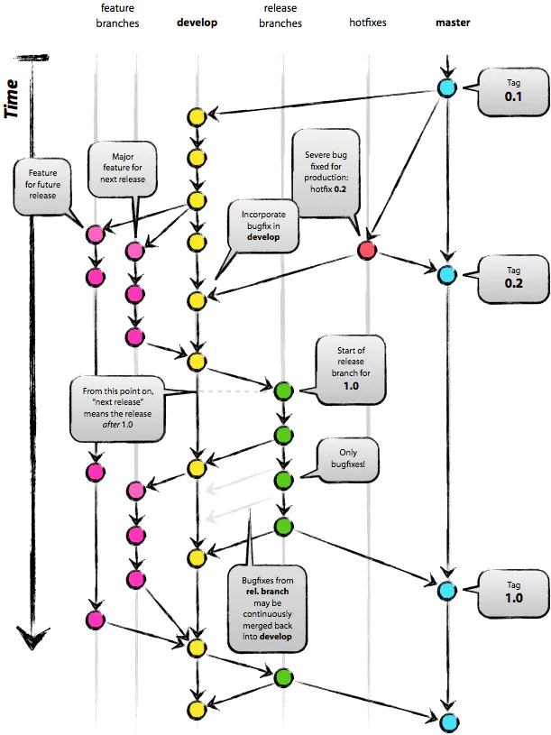
Feature branches
Feature branches，起源于 develop分支，最终也会归于 develop 分支。
Feature branches 常用于开发一个独立的新功能，且其最终的结局必然只有两个，其一是合并入 develop 分支，其二是被抛弃。最典型的 Fearture branches 一定是存在于团队开发者那里，而不应该是 中心版本库 中。
Feature branches 起源于 develop 分支，实现方法是：1
git checkout -b myfeature develop
Feature branches 最终将在开发完成后合并到 develop 分支，实现方式是：1
2
3
4
5
6
7
8
9git checkout devleop
git merge --no-ff myfeature
（--no-ff，即 not fast forward，其作用是：要求 git merge 即使在 fast forward 条件下也要产生一个新的 merge commit；
此处，要求采用 --no-ff 的方式进行分支合并，其目的在于，希望保持原有 Feature branches 整个提交链的完整性）
git branch -d myfeature
git push origin develop
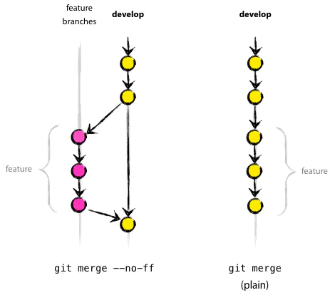
Release branch
Release branch，起源于 develop 分支，最终归于 develop 或 master 分支。这类分支建议命名为 release-*。
Relase branch 通常负责 短期的发布前准备工作、小 bug 的修复工作、版本号等元信息的准备工作。与此同时，develop 分支又可以承接下一个新功能的开发工作了。
Release branch 产生新提交的最好时机是 develop 分支已经基本到达预期的状态，至少希望新功能已经完全从 Feature branches 合并到 develop 分支了。
创建Release branches，方法是：1
2
3
4
5git checkout -b release-1.2 develop
./bump-version.sh 1.2 （这个脚本用于将代码所有涉及版本信息的地方都统一修改到 1.2，另外，需要用户根据自己的项目去编写适合的 bump-version.sh ）
git commit -a -m "Bumped version number to 1.2"
在一段短时间内，在 Release branches 上，我们可以继续修复 bug。在此阶段，严禁新功能的并入，新功能应该是被合并到 develop 分支的。
经过若干 bug 修复后，Release branches 上的代码已经达到可发布状态，此时，需要完成三个动作：第一是将 Release branches 合并到 master 分支，第二是一定要为 master 上的这个新提交打 TAG（记录里程碑），第三是要将 Release branches 合并回 develop 分支。1
2
3
4
5
6
7
8
9
10
11git checkout master
git merge --no-ff release-1.2
git tag -a 1.2 （使用 -u/-s/-a 参数会创建 tag 对象，而非软 tag）
git checkout develop
git merge --no-ff release-1.2
git branch -d release-1.2
Hotfix branches
Hotfix branches 源于 master，归于 develop 或 master，通常命名为 hotfix-*。
Hotfix branches 类似于 Release branch，但产生此分支总是非预期的关键 bug。
建议设立 Hotfix branches 的原因是：希望避免 develop分支 新功能的开发必须为 bug 修复让路的情况。
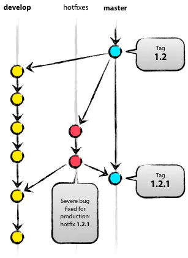
建立 Hotfix branches，方法是：1
2
3
4
5
6
7git checkout -b hotfix-1.2.1 master
./bump-version.sh 1.2.1
git commit -a -m "Bumpt version to 1.2.1" （然后可以开始问题修复工作）
git commit -m "Fixed severe production problem" （在问题修复后，进行第二次提交）
bug 修复后，需要将 Hotfix branches 合并回 master 分支，同时也需要合并回 develop 分支，方法是：1
2
3
4
5
6
7
8
9
10
11git checkout master
git merge --no-ff hotfix-1.2.1
git tag -a 1.2.1
git checkout develop
git merge --no-ff hotfix-1.2.1
git branch -d hotfix-1.2.1
操作流程
下面我们就在测试环境，进行一次实战演练。如下是涉及到的角色和权限：
| 角色 | 权限 | 解释 |
|---|---|---|
| 项目经理 | Owner | 分支管理 |
| 开发人员 | Developer | feature、hotfix、release代码开发 |
| 代码管理员 | Master | 代码merge |
| 测试人员 | Reporter | 测试 |
首先项目经理新建 group 和子 group，接着在 group 下新建了一个项目 project。
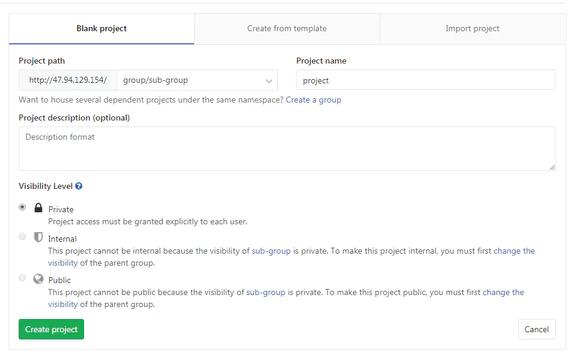
由项目经理 给开发人员分配权限。
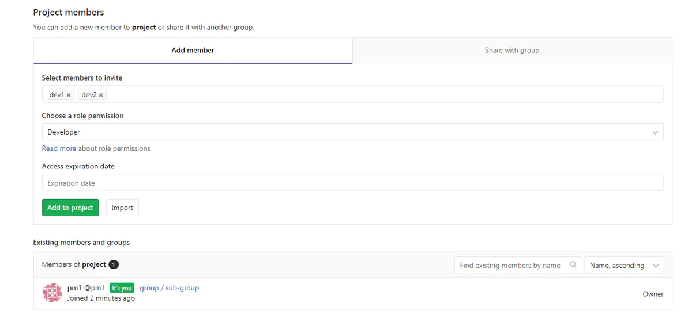
为了测试我们通过控制台，由项目经理上传一个文件方便创建分支。
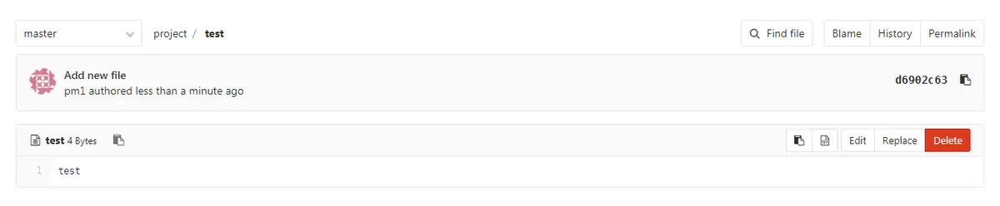
可以看到，默认会有一个 master 分支。由项目经理生成 develop 分支。
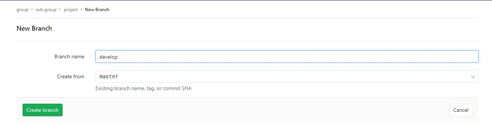
将这两个分支设置为只能由项目经理（或者由其他专人进行，后续称为代码管理员）merge。
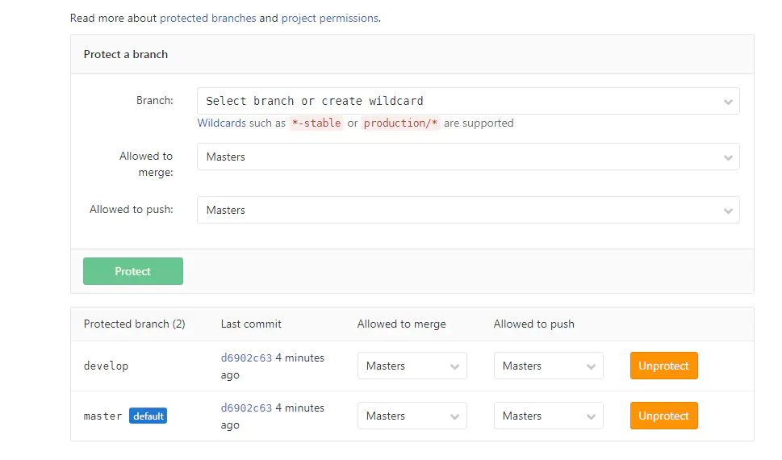
然后项目经理生成两个新分支 feature1，feature2，由两个开发人员进行开发。
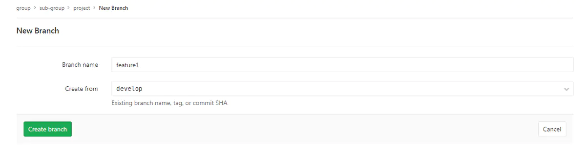
两个开发人员各自对自己的 feature 进行修改后，提交 merge request。
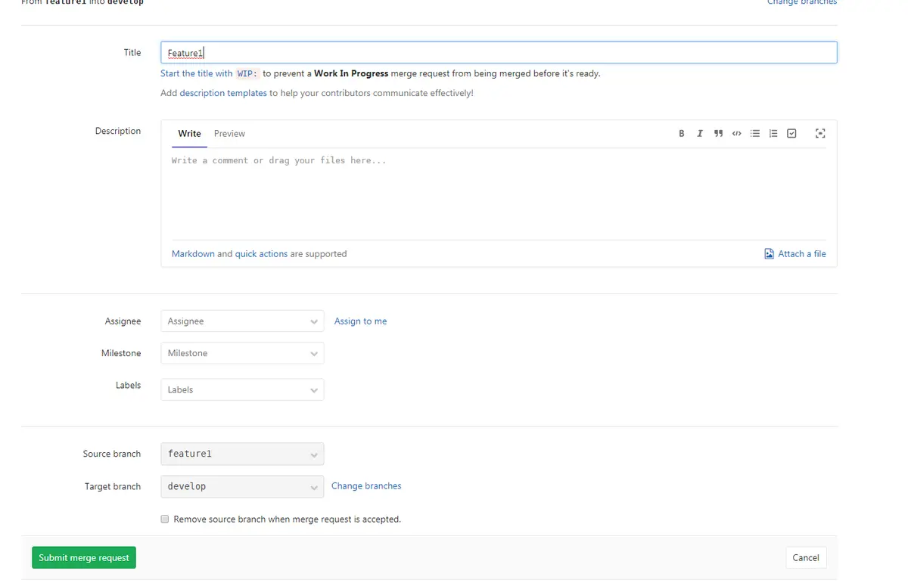
由代码管理员进行两个 feature 源码 merge，如果有冲突代码，需要进行冲突解决之后才能 merge 成功。
feature 均开发完成之后项目经理从 develop 中拉出 release 进行测试。测试过程中 release 分支如果有 bug 产生，开发人员进行修复之后，代码管理员将修改的代码 merge 回 develop。
release 版本在测试完毕后，代码管理员将 release 代码 merge 到 master，同时打上 tag 1.0。
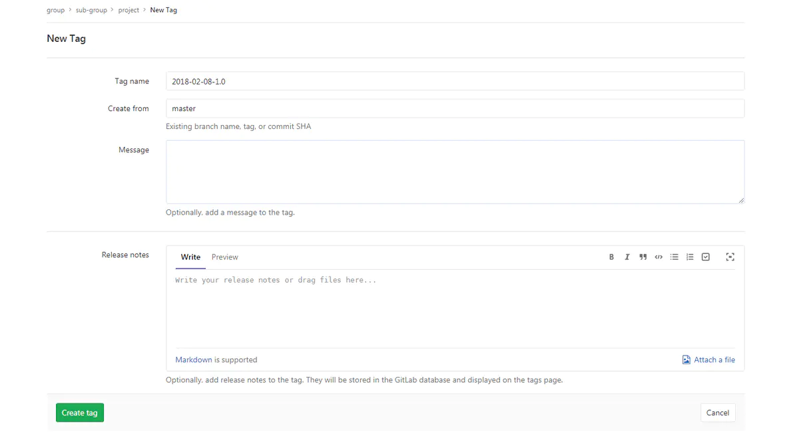
tag1.0 可用来进行生产发布。如果生产版本有问题，从对应版本的 tag 上拉出 hotfix 分支进行修复之后在 hotfix 分支上进行测试，完毕之后 merge 回 develop 和 master。
参靠：https://www.jianshu.com/p/ed034b004255
If you like this blog or find it useful for you, you are welcome to comment on it. You are also welcome to share this blog, so that more people can participate in it. If the images used in the blog infringe your copyright, please contact the author to delete them. Thank you !